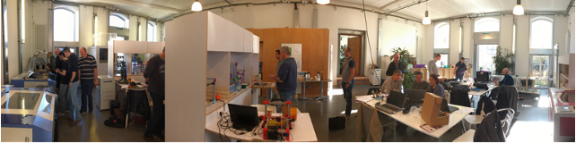

🎨🚀 Appel à projets n°1 LAUDS Exploration
Financez et produisez localement vos innovations alliant Art et Technologie ! 🌟
Vous êtes entrepreneurs, designers, créateurs, artistes, innovateurs ? L’appel à projets LAUDS est lancé !
Qu’est-ce qu’une “LAUDS Factory”
Une Manufacture Locale, Accessible, Urbaine, Numérique et Durable soutenue par l’Europe 🇪🇺
Qu’est-ce que l’appel à projets LAUDS ?
L’appel à projet LAUDS vise à soutenir des collaborations entre artistes/créatifs, fournisseurs de technologies et utilisateurs finaux, à travers des expérimentations suivant l’esprit du Nouveau Bauhaus européen pour impulser une production locale responsable (https://lnkd.in/e6Yi9htb).
Pourquoi participer ?
L’appel à projets LAUDS Exploration invite les artistes/créatifs et les fournisseurs de technologies à soumettre des propositions d’expériences pour :
- Explorer et collaborer en s’appuyant sur les ressources des LAUDS Factories
- Améliorer la convivialité et l’adoption des LAUDS Factories.
- Répondre à des défis urgents dans les secteurs de la mobilité, de l’énergie et de l’agriculture/production alimentaire.
🯠Les Challenges :
Parmi les 8 challenges européens, Université de Lorraine - ERPI | Equipe de Recherche sur les Processus Innovatifs Ecole Nationale Supérieure en Génie des Systèmes et de l’Innovation (ENSGSI) propose de relever les défis de la mobilité ou de l’énergie :
Mobilité : Développer des solutions de mobilité pour des modes de transport efficaces, résilients et durables
Énergie : Améliorer l’efficacité énergétique du processus de recyclage de plastique
À la clé :
Un financement jusqu’à 40 000 € !
Un accompagnement par l’équipe du Projet LAUDS Factories et en particulier le LF2L Lorraine Fab Living Lab
Qui peut participer ?
Artistes/créatifs et fournisseurs de technologies prêts à former des équipes hybrides
Détails des challenges
Description : Dans la région Lorraine, les villes cherchent à limiter l’utilisation des véhicules à combustion afin de réduire les émissions polluantes et la densité du trafic. En parallèle, l’installation de points de recharge électrique est encouragée. Les centres-villes sont également très attractifs pour les zones environnantes en raison des commodités qu’ils offrent. Dans les zones rurales, les options de transport deviennent de plus en plus précaires, et le véhicule individuel reste un moyen agile de se déplacer facilement en cas de besoin. Nous vous invitons à imaginer de nouvelles solutions de mobilité active, basées sur l’activité physique humaine, pour transporter des personnes ou des marchandises par des moyens non motorisés. Libérez le pouvoir des technologies immersives et basées sur les biens communs pour développer des produits et des solutions de mobilité douce inclusifs. Qu’il s’agisse de faciliter la diffusion de projets culturels dans les campagnes ou de donner aux autorités locales et aux citoyens les moyens de transformer les espaces publics, créons des solutions souples et accessibles qui réduisent le besoin de se déplacer ou le rendent plus efficace.
Description : Les déchets de matières plastiques sont un problème mondial qui exige un changement de paradigme. Il est temps d’adopter une économie circulaire. Le “Green Fablab†de l’Université de Lorraine est un pionnier du recyclage distribué avec des machines à source ouverte, explorant l’impact du recyclage local du plastique dans une chaîne d’approvisionnement courte. Cependant, la mise en place d’installations de recyclage supplémentaires pourrait entraîner une augmentation de la consommation d’énergie et des émissions, ce qui mettrait en péril notre planète et la sécurité sur le lieu de travail. C’est là que vous intervenez. Nous sommes à la recherche de projets visionnaires visant à améliorer l’efficacité énergétique tout au long de la chaîne de valeur du processus de recyclage, de la collecte à la fabrication, à l’aide de solutions open-source et low-tech. Qu’il s’agisse d’améliorer les méthodes de tri ou de concevoir des environnements de travail plus sûrs, vos idées peuvent faire la différence. Et il ne s’agit pas seulement d’innovation, mais aussi d’inspiration. Vous aurez l’occasion de sensibiliser et de susciter la passion du recyclage par des moyens créatifs et artistiques, en responsabilisant les communautés locales de la ville de Nancy par l’intermédiaire de L’Octroi-Nancy.
Présentation de la LAUDS Factory “Lorraine Smart Cities Living Lab†de l’Université de Lorraine
Piloté par le laboratoire ERPI, le Lorraine Smart Cities Living Lab (LSCLL) est un projet collaboratif de l’Université de Lorraine (UL) visant à soutenir la conception en phase amont du développement d’innovations systémiques en faveur d’une industrie 5.0 et des territoires durables. I l promeut un cadre technologique basé sur les biens communs et l’économie circulaire, encourageant la gestion collective des ressources pour la durabilité
Les compétences de base sont axées sur la structuration d’approches collaboratives pour la cocréation d’objets intermédiaires de conception (OIC) reliant la perspective multiniveaux de l’innovation du point de vue du développement technologique, de la maturité de l’organisation et du développement territorial. À chaque niveau, l’intégration des différentes parties prenantes (par exemple, l’entreprise, les fournisseurs, les partenaires, les universitaires… et les utilisateurs finaux et/ou les consommateurs) tout au long du processus de conception et de production est encouragée afin de mieux comprendre les systèmes sociotechniques.
Par ailleurs, la LAUDS Factory de l’UL (LSCLL-UL) vise à mettre en œuvre le concept Do-It-Together (DIT), un processus alternatif de co-création et de fabrication ouverte qui permet une production personnalisée, en promouvant une fabrication locale plus proche des consommateurs et des communautés ouvertes qui contribuent activement à la production (voir : https://www.inedit-project.eu/).

Enfin, le LSCLL crée les conditions pour des partenariats public-privé-population (PPPP) conscients des défis environnementaux et désireux de développer des solutions au service du bien commun. Cela signifie que nous adoptons une approche en quintuple hélice pour diffuser l’innovation et les pratiques connexes au service de la recherche, du développement des innovations, de la formation, d’une culture citoyenne et de l’environnement.
Les ressources et la technologie à la disposition des équipes hybrides.
Une plateforme physique
En tant que plateforme de recherche et d’enseignement, le LSCLL-UL dispose d’un large éventail d’équipements, certains destinés au grand public, d’autres très spécialisés. La description des équipements disponibles se trouve dans les pages suivantes :
- https://fabmanager.lf2l.fr/#!/machines
- https://pluginlabs.univ-lorraine.fr/fiche/lorraine-fab-living-lab/
- https://inspiration.dgesip.fr/Espaces/Lieu/WuMr6/
Sur cette dernière page web, une description des espaces d’innovation, y compris les laboratoires, au sein du LSCLL-UL est disponible.
Un processus 2D-3D-4D : de la co-création au test d’usage
Appui à la co-création du concept (2D) et à son adéquation avec son environnement socio-technique et naturel. Accompagnement des projets pour une validation du prototype (3D) par une évaluation de l’expérience utilisateur dans un environnement réel ou virtuel (4D) avant la production physique, afin de limiter le nombre d’essais et d’erreurs, tout en minimisant le gaspillage de ressources. Les tests pourraient être mis en place au LSCLL-UL (environnement de contrôle), dans un environnement pertinent (environnement ouvert) ou à la Foire Expo de Nancy avec l’Open citizen lab dans le cadre d’ateliers pédagogiques/citoyens, etc.
Un réseau territorial
- L’Octroi Nancy - tiers-lieu créatif, culturel et citoyen de la ville de Nancy, qui donne accès à des espaces supplémentaires tels que des bureaux, une communauté créative, etc.
- Projet DHDA : un collectif régional et hybride (entrepreneurs, forestiers, artistes, agriculteurs, chercheurs, élus, industriels, financiers et naturalistes, citoyens…) pour valoriser tous les arbres de notre région.
Période de coopération
Les expérimentations peuvent être mises en œuvre entre octobre 2024 et septembre 2025. Le LSCLL-UL est disponible pour coopérer directement avec l’équipe hybride d’octobre 2024 à mi-juillet 2025.
Activités et résultats attendus
Les équipes hybrides candidates à l’appel à projets ouvert #1 | Exploration du LAUDS sont libres de proposer les activités qui leur permettront de coopérer avec les LAUDS Factories et d’apporter une réponse au défi sélectionné. Dans le cadre des activités proposées, les expériences sont encouragées à développer du matériel open-source sous forme de nouvelles solutions ou de développement de solutions existantes. Il est attendu des expériences qu’elles proposent une période de coopération sur site dans les usines LAUDS. Les expériences sélectionnées doivent produire les résultats suivants :
- un rapport axé sur le défi décrivant le processus de production développé, y compris un plan de la solution proposée (le cas échéant) ;
- un rapport final sur la collaboration avec l’usine LAUDS. Le projet LAUDS Factories fournira les modèles respectifs aux équipes sélectionnées.
Comment candidater ?
📅 Soumettez vos propositions via le formulaire de candidature accessible ici : https://lnkd.in/eijBtYvw, avant le 29 juillet 2024 à 17h00.
📜 Langue de candidature : Anglais
Critères d’éligibilité
Les propositions doivent être soumises par un consortium composé d’au moins 2 entités juridiques, avec au moins un artiste/créateur et un fournisseur de technologie. Les entités doivent être établies dans un pays de l’UE ou un pays associé à Horizon Europe.
Critères d’évaluation :
Webinaire de lancement
Accessible en ligne https://lnkd.in/er6gYBUH
Date : 20 juin 2024 Heure : 16h00 CET
Durée : 2h
Langue: anglais
Pour plus d’informations, consultez le lien suivant : https://lnkd.in/eijBtYvw